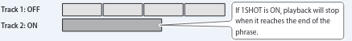

| Parameter | Value (Bold: default) | Explanation |
|---|---|---|
| 1SHOT |
Specifies whether the track playback will be one-shot (ON) or not one-shot (OFF; conventional loop playback).

|
|
| OFF | Conventional loop playback | |
| ON | The phrase will play only once from the beginning to the end of the track, and then stop automatically (One-Shot Playback). If you press the [REC/PLAY] switch during playback, playback will begin again from the beginning of the track (Retrigger Playback). Overdubbing cannot be carried out. * If you don't want to use tempo synchronization, set TEMPO.S (p. 3) "OFF". | |